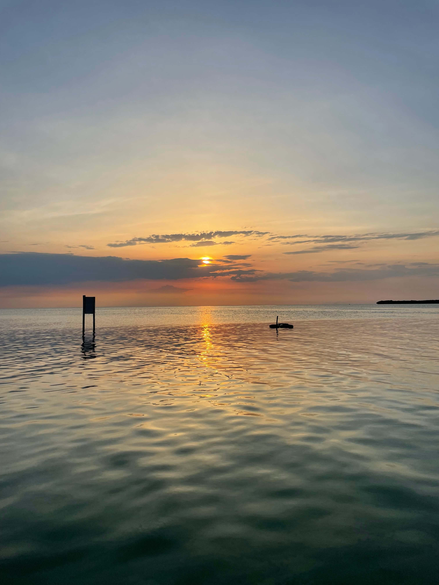

Caye Caulker
Eigenlijk Zouden we niet naar Belize gaan maar toen we in Bacalar waren werden we benaderd door een vriendin van ons uit Nederland. Zei verbleef in Belize en nodigde ons uit om bij haar langs te komen en toen hebben we toch besloten om te gaan. Uiteindelijk hadden we besloten dat we eerst naar Caye Caulker zouden gaan om daarna door te reizen naar Placencia waar we onze vriendin zouden ontmoeten. Caye Caulker is een eiland aan de kust van Belize, eigenlijk is het heel vergelijkbaar aan Isla Holbox.
